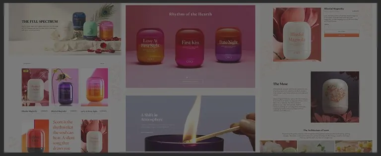
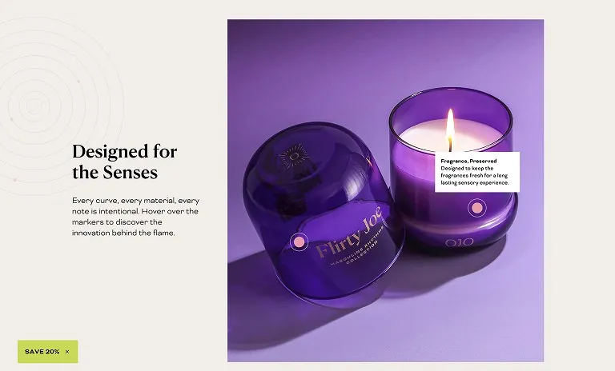
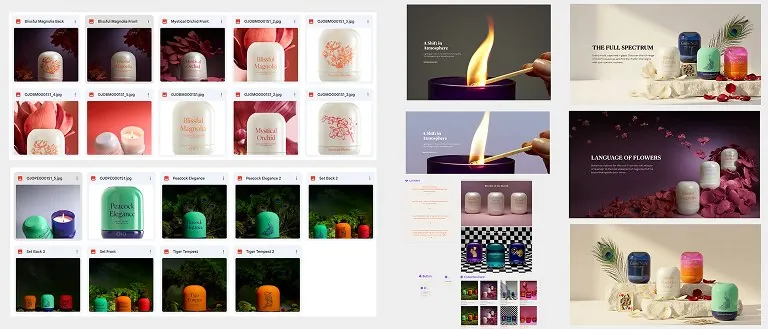
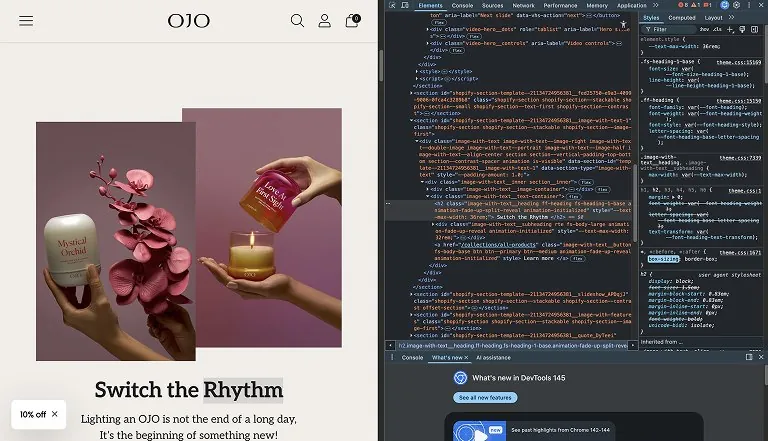

Scent, treated as a narrative.
Ojo doesn't sell objects, they architect atmospheres — but their site was a rushed MVP on a generic template. I rebuilt it around their philosophy, Switch the Rhythm, so the buying flow sells the ritual instead of the wax.

Collections rebuilt as chapters around the brand's philosophy, not a filtered grid.
Set the photography standard with marketing before the pages were built.
Ran the testing through to launch in two markets, in real browsers.
Collections as chapters, not a filtered grid
Ojo's philosophy needed to be the foundation of the experience, not a tagline in the footer. I built a wireframe architecture that treats scent as a narrative: every collection is a distinct chapter, which moves the visitor from buying a candle to entering a curated ritual.
Curating the visual assets
A luxury experience depends on its imagery. I worked with the marketing team to set a standard for all product photography and lifestyle imagery, then aligned those assets to the interface's whitespace and typography so the editorial feel held across every touchpoint.

Purposeful motion, replacing off-the-shelf
The original site leaned on pre-packaged loading animations that cheapened the brand. I stripped them out and replaced them with motion that does a job, built in Rive: subtle parallax, hover markers that reveal the material story, and smooth page transitions — prototyped at high fidelity before build.
Motion carries the detail instead of copy — and stays quiet enough not to shout over the product.

Pixel-tight in the browser, not just in the file
I worked with the dev team through to launch and ran the testing myself — every breakpoint, the micro-animations, type scaling, high-res image loading — and stayed with it once it was live, checking the real thing in real browsers rather than signing off a staging link.
Signed off in real browsers, in two markets — not on a staging link.

A storefront that finally sounds like the brand.
Live in two markets — ojocandles.com for Turkey and us.ojocandles.com for the US. Designed in a month, live a month after that, aimed at market perception and D2C conversion at the same time. Here the constraint was taste rather than complexity, and most of the job was talking the client out of their first instinct.